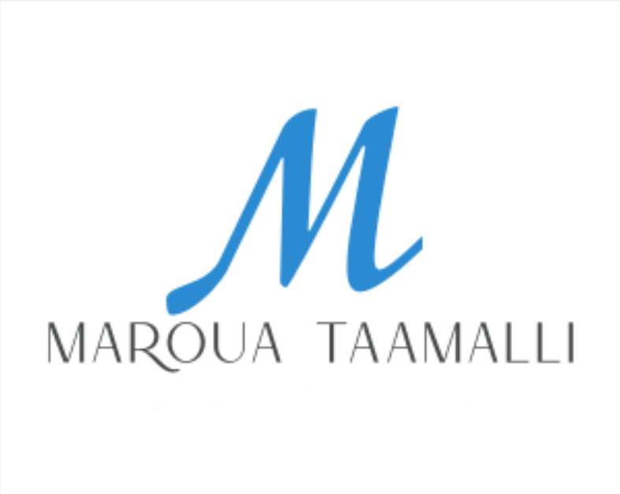

Acceuil
Experiences
Parcour Académique
2023
Etudiante en cycle d'ingénieur en Génie Informatique
- École supérieure privée d'ingénierie et de technologie
2020
Diplôme d'ingénieur en Génie Textile
- Ecole nationale d'ingénieurs Monastir
2019
Programme de mobilité
- Saxion University of Applied Sciences,
2017
Admission au concours National d'entrée aux écoles d'ingénieurs
- Institut Préparatoire aux Etudes d'ingénieurs El Manar